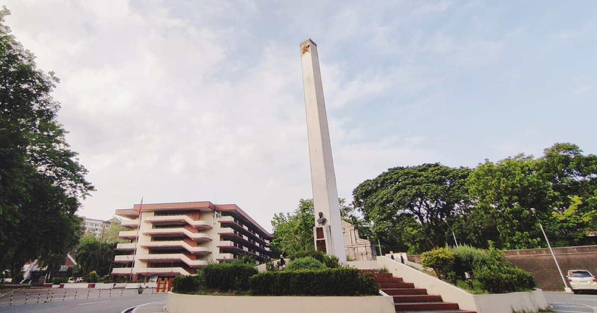

SPECIAL COVERAGE | Oct 10, 2025
PUP Sto. Tomas Joins "Largest University Walkout in History"
Students and faculty of the Polytechnic University of the Philippines Sto. Tomas Campus (PUP-STC) joined the "Largest University Walkout in History" on October 10, 2025, in solidarity with thousands of Iskolar ng Bayan across the country calling for accountability, transparency, and increased funding for public education.
REPORT | Sep 25, 2025
PUP's New LMS Faces Bugs, Slowness, and Accessibility Concerns
The Polytechnic University of the Philippines (PUP) has rolled out a new Learning Management System (LMS)
this 1st semester of Academic Year 2025-2026, but both students and faculty are already raising concerns
over its usability, speed, and accessibility.
REPORT | Sep 24, 2025
Severe Tropical Storm "Ompong” to Hit CALABARZON; PUP Sto. Tomas Shifts to Distance Learning
The Philippine Atmospheric, Geophysical and Astronomical Services Administration (PAGASA)
has issued warnings over Severe Tropical Storm Ompong (international name: Bualoi), which is expected to
affect the CALABARZON region on Friday and Saturday. The storm is forecast to intensify into a typhoon as it
nears the Philippine landmass, bringing strong winds and heavy rains.
FEATURE | Sep 23, 2025
Remembering Charlie Del Rosario: PUP Professor and the First Desaparecido
On September 21, 1972, then-President Ferdinand Marcos signed Proclamation 1081, placing the Philippines
under Martial Law. While the proclamation bore that date, it was only announced to the public on September
23 through a televised address, marking the beginning of one of the darkest chapters in the nation's
history.
LIFESTYLE | Sep 13, 2025
Hirono-Inspired Stickers at the Dibujo Art Society's World Art Day Exhibit
At the recently concluded Art for a Sustainable Future: Exhibition and Sale of the
Dibujo Art Society last June 5-7, 2025, one creative piece stood out and captured the hearts of students and
visitors alike: the Hirono-inspired stickers designed by Cheska Shayne Romero.
REPORT | Sep 03, 2025
Aquino Pushes Blockchain for Transparent Budgeting
Senator Bam Aquino has filed the Blockchain the Budget Bill, a proposed measure that
seeks to make the national budget more transparent, traceable, and accessible to the public by leveraging
blockchain technology.
FEATURE | Aug 30, 2025
National Press Freedom Day: Campus Voices and Technology at the Frontlines of Truth
The National Press Freedom Day serves as a reminder that journalism is more than just headlines and
bylines—it is the lifeblood of democracy. Today, as the Philippines commemorates this day, the conversation
extends beyond newsrooms and rallies into digital landscapes, where artificial intelligence and campus
journalism are reshaping how stories are told.

FEATURE | Aug 25, 2025
Batangueño Hero Apolinario Mabini: A Legacy That Proves Disability is Never a Hindrance
Every National Heroes Day, the nation honors the men and women who stood at the forefront of freedom,
intellect, and service to the Filipino people. Among them is Apolinario Mabini of Tanauan, Batangas, the
“Brains of the Revolution” and “Sublime Paralytic,” whose ideas shaped the birth of the First Philippine
Republic. Bound by polio yet unbound in spirit, Mabini stands as living proof that disability is never a
hindrance to greatness.
TECH NEWS | Aug 12, 2025
MRT-3 Trials Visa Card and GCash NFC Payments as Beep Card Alternative
Commuters on Metro Manila's MRT-3 line may soon have a new way to pay for their train rides. The Department
of Transportation (DOTr) and MRT-3 management have begun testing contactless payments using Visa cards and
GCash, aiming to provide faster and more convenient options alongside the existing Beep Card system.
REPORT | Jul 31, 2025
PUP's Research Ambitions Stifled by ₱8.4B Budget Cut
The Polytechnic University of the Philippines (PUP), one of the country's largest and most accessible state
universities, is facing a staggering ₱8.4 billion budget cut for fiscal year 2025 — a blow that threatens to
derail its efforts toward becoming a research-oriented and innovation-driven institution.
REPORT | Jul 29, 2025
Marcos Jr. Reaffirms Commitment to Technology in SONA 2025, Drawing Praise and Criticism
In his fourth State of the Nation Address (SONA) on July 28, President Ferdinand "Bongbong" Marcos Jr. once
again placed technology and innovation at the center of his administration's development agenda,
highlighting efforts in education, industry, and infrastructure. While the initiatives earned praise from
some sectors, others raised concerns about implementation gaps, digital inequality, and long-standing
structural issues.
FEATURE | Jul 23, 2025
ICYMI: PUP-STC BSIT Graduating Students Hold Graduation Pictorial
In a milestone moment for the graduating class of 2025, the Bachelor of Science in
Information Technology (BSIT) students of the Polytechnic University of the Philippines Sto. Tomas Branch
(PUP-STC) gathered for their official graduation pictorial held last July 12, 2025, in partnership with
Relans
Digital Photography.
REPORT | Jul 15, 2025
Marcos Vetos NPU Bill: Cites Low Performance, PUP System Cries Foul
For the second time in less than a decade, a proposed law seeking to convert the Polytechnic
University of the Philippines (PUP) into a National Polytechnic University (NPU) has been vetoed—this time
by President Ferdinand “Bongbong” Marcos Jr. The move, citing “low performance indicators,” has drawn
widespread
criticism and fueled mass protests across PUP campuses nationwide.
REPORT | Jun 15, 2025
Bato Shares Fake AI Video Backing VP Duterte
A video shared by Senator Ronald "Bato" Dela Rosa is now under
scrutiny after it was revealed to be AI-generated. The video, which went viral after being posted on the
senator's official Facebook page, depicts a group of university students passionately defending Duterte and
rejecting alleged plots to remove her from office. However, it has since been confirmed that the
footage was manipulated using artificial intelligence.
TECH NEWS | Jun 12, 2025
WWDC25 Report: Apple's Liquid Glass Design Overhaul and Its Implications
Apple concluded its Worldwide Developers Conference 2025 this week with announcements that mark a
significant departure from recent years' incremental updates. The company unveiled what it calls "Liquid
Glass," a comprehensive design overhaul that represents the most substantial visual change to Apple's
operating
systems since the introduction of iOS 7's flat design in 2013.
FEATURE | May 31, 2025
PUP-STC Computer Society Concludes Academic Year with Grand "404 ComSoc Not Found" Celebration
The Polytechnic University of the Philippines – Sto. Tomas Campus’ (PUP-STC) Computer Society successfully
concluded Academic Year 2024-2025 with their year-end celebration titled "404 ComSoc Not Found: The Grand
ExIT & Year-End Celebration" on May 26, 2025. Students attended the event wearing Y2K-inspired outfits,
following the theme of the celebration. The entire program brought together students and faculty members to
celebrate the organization's successes throughout the academic year.
FEATURE | Dec 29, 2024
Bringing Imagination to Life: The Set Design of the Computer Society’s 2024 General Assembly
Historically, the Computer Society's General Assembly sets the stage for groundbreaking discussions,
innovation showcases, and memorable events. But this year, the stage itself was a masterpiece that stole the
show. The 2024 GA set design exemplifies how technology and creativity converge to transform a visionary 3D
model into an awe-inspiring reality.
FEATURE | Nov 24, 2024
From PUP Sta. Mesa to PUP Sto. Tomas: New Computers Arrived
The Polytechnic University of the Philippines Sto. Tomas Campus has received 25 new computers from PUP Sta.
Mesa, the University's main campus. This upgrade significantly enhances the campus computer laboratories,
which are primarily used by students in technology-centered programs.
FEATURE | Oct 31, 2024
Computer Society Sentinels: The Society's Competitive Team Brand
The Computer Society unveils the new logo of its competitive team brand: The Sentinels. The Computer Society
Sentinels (CSS) will be the Society's team brand for competitive events such as Sports, E-Sports, Collegiate
Competitions, and other events that require a team.